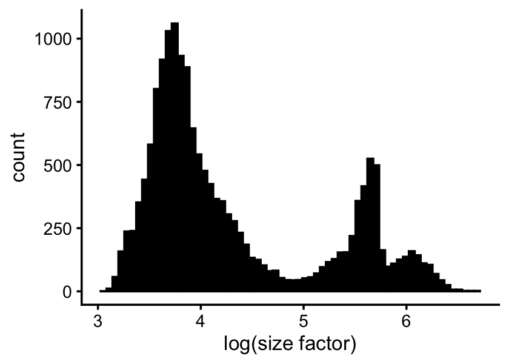
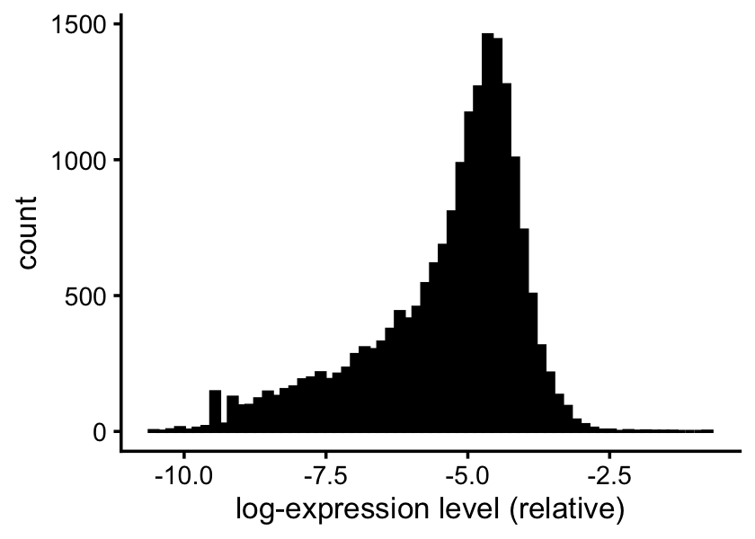
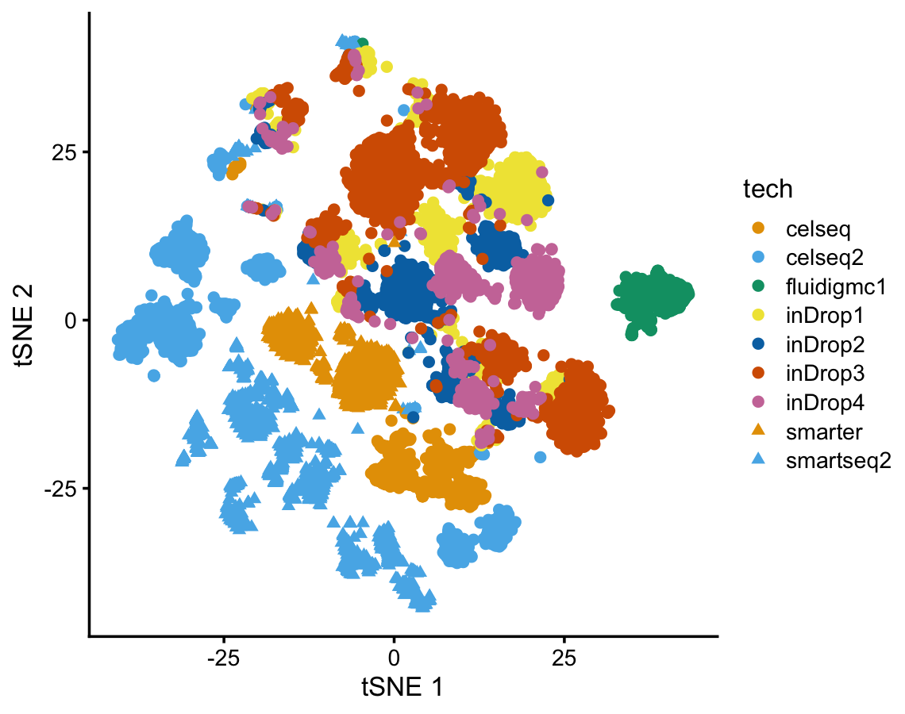

Initial exploration of the pancreas data set
Peter Carbonetto
Last updated: 2024-10-31
Checks: 7 0
Knit directory:
single-cell-jamboree/analysis/
This reproducible R Markdown analysis was created with workflowr (version 1.7.1). The Checks tab describes the reproducibility checks that were applied when the results were created. The Past versions tab lists the development history.
Great! Since the R Markdown file has been committed to the Git repository, you know the exact version of the code that produced these results.
Great job! The global environment was empty. Objects defined in the global environment can affect the analysis in your R Markdown file in unknown ways. For reproduciblity it’s best to always run the code in an empty environment.
The command set.seed(1) was run prior to running the
code in the R Markdown file. Setting a seed ensures that any results
that rely on randomness, e.g. subsampling or permutations, are
reproducible.
Great job! Recording the operating system, R version, and package versions is critical for reproducibility.
Nice! There were no cached chunks for this analysis, so you can be confident that you successfully produced the results during this run.
Great job! Using relative paths to the files within your workflowr project makes it easier to run your code on other machines.
Great! You are using Git for version control. Tracking code development and connecting the code version to the results is critical for reproducibility.
The results in this page were generated with repository version 32cb625. See the Past versions tab to see a history of the changes made to the R Markdown and HTML files.
Note that you need to be careful to ensure that all relevant files for
the analysis have been committed to Git prior to generating the results
(you can use wflow_publish or
wflow_git_commit). workflowr only checks the R Markdown
file, but you know if there are other scripts or data files that it
depends on. Below is the status of the Git repository when the results
were generated:
Untracked files:
Untracked: analysis/pancreas.RData
Untracked: data/Immune_ALL_human.h5ad
Untracked: data/human_pancreas_norm_complexBatch.h5ad
Note that any generated files, e.g. HTML, png, CSS, etc., are not included in this status report because it is ok for generated content to have uncommitted changes.
These are the previous versions of the repository in which changes were
made to the R Markdown (analysis/pancreas.Rmd) and HTML
(docs/pancreas.html) files. If you’ve configured a remote
Git repository (see ?wflow_git_remote), click on the
hyperlinks in the table below to view the files as they were in that
past version.
| File | Version | Author | Date | Message |
|---|---|---|---|---|
| Rmd | 32cb625 | Peter Carbonetto | 2024-10-31 | workflowr::wflow_publish("pancreas.Rmd", verbose = TRUE) |
| Rmd | a04b2c0 | Peter Carbonetto | 2024-10-31 | A few improvements to the pancreas workflowr analysis. |
| html | fed31e6 | Peter Carbonetto | 2024-10-31 | First build of the pancreas workflowr page. |
| Rmd | 886cd01 | Peter Carbonetto | 2024-10-31 | workflowr::wflow_publish("pancreas.Rmd", verbose = TRUE, view = FALSE) |
| html | 528d5ef | Peter Carbonetto | 2024-10-30 | First build of the pancreas workflowr page. |
| Rmd | a1d7a17 | Peter Carbonetto | 2024-10-30 | Added some background on the pancreas data set. |
| Rmd | 3fa28da | Peter Carbonetto | 2024-10-30 | Small edit to pancreas.Rmd. |
| Rmd | 370a336 | Peter Carbonetto | 2024-10-30 | Still working on pancreas.Rmd. |
| Rmd | fbe0b62 | Peter Carbonetto | 2024-10-30 | Made a few improvements to the pancreas analysis. |
| Rmd | c090d1d | Peter Carbonetto | 2024-10-30 | Working on initial examination of pancreas data. |
The aim of this analysis is to take an initial look at the “pancreas” data set that was featured in in the Luecken et al 2022 benchmarking paper, and prepare the data in a convenient form for subsequent analyses in R.
In addition to being featured in the Luecken et al paper, it has been used in several papers on “data integration” methods for single-cell data (also known as “batch correction” or “harmonization” methods). See for example the MNN paper. The Supplementary Note in the Luecken et al paper has additional references.
See Supplementary Fig. 13, Supplementary Note 3 and Supplementary Data 7 of the Luecken et al paper for more information on this data set.
First, load the packages needed for this analysis. Note that MatrixExtra is also used in one of the steps below.
library(tools)
library(Matrix)
library(hdf5r)
library(rsvd)
library(uwot)
library(ggplot2)
library(cowplot)Download the file “human_pancreas_norm_complexBatch.h5ad” from figshare and copy it to the “data” subdirectory of this git repository. Then load the count data, and encode them as a sparse matrix:
dat <- H5File$new("../data/human_pancreas_norm_complexBatch.h5ad",mode = "r")
counts <- dat[["layers"]][["counts"]][,]
counts <- t(counts)
counts <- as(counts,"CsparseMatrix")
sample_info <- data.frame(id = dat[["obs"]][["_index"]][],
tech = dat[["obs"]][["tech"]][],
celltype = dat[["obs"]][["celltype"]][],
size_factor = dat[["obs"]][["size_factors"]][],
stringsAsFactors = FALSE)
sample_info <- transform(sample_info,
tech = factor(tech),
celltype = factor(celltype))
levels(sample_info$tech) <- dat[["obs"]][["__categories"]][["tech"]][]
levels(sample_info$celltype) <- dat[["obs"]][["__categories"]][["celltype"]][]
genes <- dat[["var"]][["_index"]][]
rownames(counts) <- sample_info$id
colnames(counts) <- genesNote that some of the data are not actually counts, so perhaps calling this matrix “counts” is a bit misleading. Also note that in Luecken et al the counts were log-transformed, but here we taking the untransformed counts.
The matrix has 16,382 rows (cells) and 19,093 columns (genes), and about 18% of the entries are nonzeros:
nrow(counts)
ncol(counts)
mean(counts > 0)
# [1] 16382
# [1] 19093
# [1] 0.1779012The pancreas data are actually several scRNA-seq data sets that were combined together:
table(sample_info$tech)
#
# celseq celseq2 fluidigmc1 inDrop1 inDrop2 inDrop3 inDrop4
# 1004 2285 638 1937 1724 3605 1303
# smarter smartseq2
# 1492 2394The cells were previous annotated by cell type:
table(sample_info$celltype)
#
# acinar activated_stellate alpha beta
# 1669 464 5493 4169
# delta ductal endothelial epsilon
# 1055 2142 313 32
# gamma macrophage mast quiescent_stellate
# 699 79 42 193
# schwann t_cell
# 25 7Some of the cell types occur in only a very small number of cells.
Distribution of the size factors:
s <- rowSums(counts)
ggplot(data.frame(log_size_factor = log10(s)),aes(log_size_factor)) +
geom_histogram(bins = 64,col = "black",fill = "black") +
theme_cowplot(font_size = 10)
| Version | Author | Date |
|---|---|---|
| fed31e6 | Peter Carbonetto | 2024-10-31 |
Genes with nonzero expression:
p <- colSums(counts)/sum(s)
sum(p > 0)
# [1] 18771Distribution of the (relative) expression levels:
p <- p[p > 0]
ggplot(data.frame(log_rel_expression_level = log10(p)),
aes(log_rel_expression_level)) +
geom_histogram(bins = 64,col = "black",fill = "black") +
theme_cowplot(font_size = 10)
| Version | Author | Date |
|---|---|---|
| fed31e6 | Peter Carbonetto | 2024-10-31 |
Now do UMAP… Compute the shifted log counts:
a <- 1
s <- rowSums(counts)
s <- s/mean(s)
Y <- MatrixExtra::mapSparse(counts/(a*s),log1p)UMAP:
set.seed(1)
out <- rsvd(Y,k = 50)
res <- umap(out$u,n_components = 2,n_threads = 8,verbose = TRUE)
sample_info$umap1 <- res[,1]
sample_info$umap2 <- res[,2]UMAP vs. cell type:
umap_colors <- rep(c("#1b9e77","#d95f02","#7570b3","#e7298a",
"#66a61e","#e6ab02","#a6761d"),times = 2)
umap_shapes <- rep(c(4,19),each = 7)
ggplot(sample_info,aes(x = umap1,y = umap2,color = celltype,
shape = celltype)) +
geom_point(size = 1) +
scale_color_manual(values = umap_colors) +
scale_shape_manual(values = umap_shapes) +
theme_cowplot(font_size = 10)
UMAP vs. batch:
umap_colors <- rep(c("#1b9e77","#d95f02","#7570b3","#e7298a","#66a61e"),
times = 2)
umap_shapes <- rep(c(4,19),each = 5)
ggplot(sample_info,aes(x = umap1,y = umap2,color = tech,shape = tech)) +
geom_point(size = 1) +
scale_color_manual(values = umap_colors) +
scale_shape_manual(values = umap_shapes) +
theme_cowplot(font_size = 10)
TO DO: Save the data and UMAP result in an .Rdata file for more convenient analyses with the matrix factorization methods.
save(list = c("sample_info","counts"),file = "pancreas.RData")
resaveRdaFiles("pancreas.RData")TO DO: Upload the prepared data file pancreas.RData to Box and add the link here.
sessionInfo()
# R version 4.3.3 (2024-02-29)
# Platform: aarch64-apple-darwin20 (64-bit)
# Running under: macOS Sonoma 14.6.1
#
# Matrix products: default
# BLAS: /Library/Frameworks/R.framework/Versions/4.3-arm64/Resources/lib/libRblas.0.dylib
# LAPACK: /Library/Frameworks/R.framework/Versions/4.3-arm64/Resources/lib/libRlapack.dylib; LAPACK version 3.11.0
#
# locale:
# [1] en_US.UTF-8/en_US.UTF-8/en_US.UTF-8/C/en_US.UTF-8/en_US.UTF-8
#
# time zone: America/Chicago
# tzcode source: internal
#
# attached base packages:
# [1] tools stats graphics grDevices utils datasets methods
# [8] base
#
# other attached packages:
# [1] cowplot_1.1.3 ggplot2_3.5.0 uwot_0.2.2.9000 rsvd_1.0.5
# [5] hdf5r_1.3.11 Matrix_1.6-5
#
# loaded via a namespace (and not attached):
# [1] sass_0.4.8 utf8_1.2.4 generics_0.1.3
# [4] stringi_1.8.3 lattice_0.22-5 digest_0.6.34
# [7] magrittr_2.0.3 evaluate_0.23 grid_4.3.3
# [10] float_0.3-2 fastmap_1.1.1 rprojroot_2.0.4
# [13] workflowr_1.7.1 jsonlite_1.8.8 whisker_0.4.1
# [16] promises_1.2.1 fansi_1.0.6 scales_1.3.0
# [19] RhpcBLASctl_0.23-42 codetools_0.2-19 jquerylib_0.1.4
# [22] cli_3.6.2 rlang_1.1.3 RcppAnnoy_0.0.22
# [25] bit64_4.0.5 munsell_0.5.0 withr_3.0.0
# [28] cachem_1.0.8 yaml_2.3.8 parallel_4.3.3
# [31] dplyr_1.1.4 colorspace_2.1-0 httpuv_1.6.14
# [34] vctrs_0.6.5 R6_2.5.1 lifecycle_1.0.4
# [37] git2r_0.33.0 stringr_1.5.1 fs_1.6.3
# [40] bit_4.0.5 irlba_2.3.5.1 MatrixExtra_0.1.15
# [43] pkgconfig_2.0.3 pillar_1.9.0 bslib_0.6.1
# [46] later_1.3.2 gtable_0.3.4 glue_1.7.0
# [49] Rcpp_1.0.12 highr_0.10 xfun_0.42
# [52] tibble_3.2.1 tidyselect_1.2.1 knitr_1.45
# [55] farver_2.1.1 htmltools_0.5.7 labeling_0.4.3
# [58] rmarkdown_2.26 compiler_4.3.3